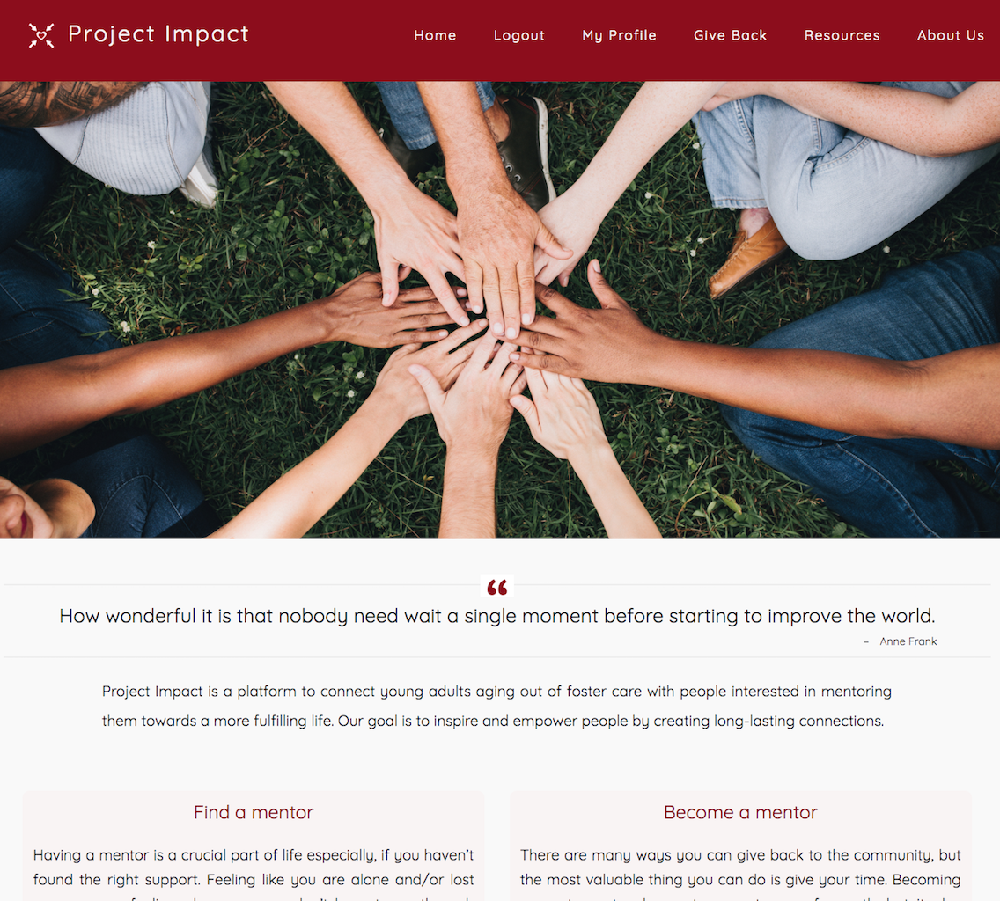
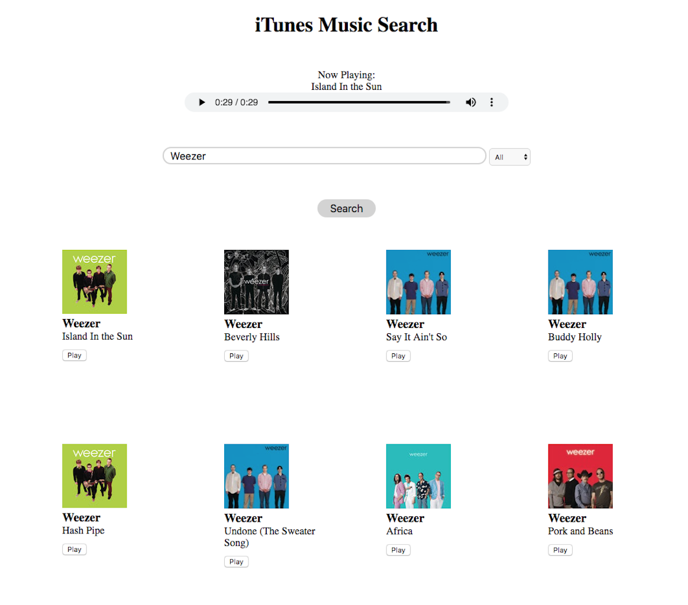

Projects
Project Impact
Project Impact is an online platform that allows foster children aging out of the foster care system to connect with mentors who can provide guidance and support as foster children transition into adulthood.
Live Site | Code on Github

iTunes Music Search
The iTunes Music Search is a custom designed iTunes search engine. This project impliments and manipulates iTunes public API, allowing users to search their favorite artists or songs to display relevant results and play 30 second previews.
Live Site | Code on Github
